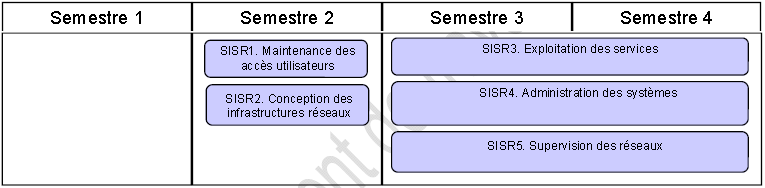

Description
Les modules
Le titulaire du diplôme participe à la production et à la fourniture de services en réalisant ou en
adaptant des solutions d’infrastructure et en assurant le fonctionnement optimal des équipements. Il
intervient plus particulièrement dans :
- l’installation, l’intégration, l’administration, la sécurisation des équipements et des services
informatiques
- l’exploitation, la supervision et la maintenance d'une infrastructure
- la définition et la configuration des postes clients, des serveurs et des équipements
d’interconnexion, leur déploiement et leur maintenance
- la gestion des actifs de l’infrastructure
- la recherche de réponses adaptées à des besoins d’évolution de l’infrastructure ou à des
problèmes liés à la mise à disposition des services informatiques
- la résolution des incidents et l’assistance des utilisateurs
- le maintien de la qualité des services informatiques.
En fonction de la taille de l’organisation cliente, le titulaire du diplôme peut également être amené à
participer aux missions suivantes :
- l’étude et la caractérisation de solutions d’évolution ou d’optimisation d’une infrastructure
- la prise en charge de la relation avec les fournisseurs et les prestataires informatiques
- la mesure des performances d'une infrastructure, des équipements ou des services
informatiques.
Emplois concernés
Les dénominations d’emplois concernés sont diverses. À titre indicatif, les appellations les plus
fréquentes sont les suivantes (classées par ordre alphabétique) :
- Administrateur systèmes et réseaux
- Informaticien support et déploiement
- Pilote d'exploitation
- Support systèmes et réseaux
- Technicien d’infrastructure
- Technicien de production
- Technicien micro et réseaux
- Technicien systèmes et réseaux
- Technicien réseaux - télécoms
Perspectives d’évolution
Dans le cadre de son évolution professionnelle, le titulaire du diplôme peut se voir confier la
responsabilité de projets ou des fonctions de management d’une équipe.
Les modules
